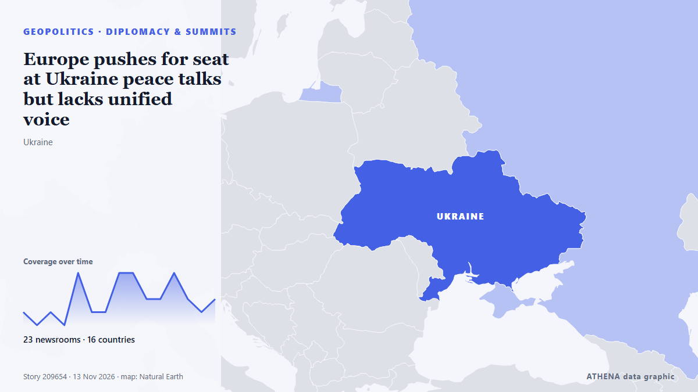

Europe pushes for seat at Ukraine peace talks but lacks unified voice

European nations are seeking an envoy to represent them in talks on ending the Russia-Ukraine war, concerned that a U.S.-backed process will leave them sidelined as Moscow and Washington decide the… from The National Herald
Reported independently by 24 outlets in 16 countries since 12 Nov, first by Novinite; coverage is fading. ATHENA rates the risk elevated (4.3/10), driven mainly by the severity of the harm described and its geographic and sector reach — up from 0.0 in the last 24 hours. Confidence is 92% (high), with 24 independent outlets corroborating it and an average source reliability of 75%. Outlets by country: United Kingdom (6), Belgium (3), Turkey (3). Coverage: 12 Nov to 13 Nov, 33 hours.
Why it matters: Russia's full-scale invasion of Ukraine began in February 2022. This tracker follows the fighting, strikes on infrastructure and the diplomacy around the war, as covered by outlets around the world.
What changed: 28 new reports from 22 outlets in the 24 hours to 13 Nov.
First reported as: EU leaders tussle over who to send to Ukraine, Russia peace talks
How to read this page
- What you are reading
- 24 outlets in 16 countries reported this event. The reports below are listed in the order they appeared; each headline opens the original article. ATHENA writes none of the reports.
- Our reading
- Under watch — The reports describe action, or a decision still to be taken, between states or armed groups. ATHENA follows what happens next. We look for four kinds of development: nothing further, an open action that someone claims, an action through others or without a claim, and an accident or misreading. We do not predict which will happen.
- How much evidence
- Fair Several independent outlets agree, but the picture could still change.
After repeats, off-topic items and stale reports are removed, 19 of the 30 listed reports are counted; 97% of the headlines match the event.
- What this does not mean
- ATHENA measures how an event is reported, not whether it is true. This is not a forecast, a judgement on who is right, or advice.
- What would change it
- Reports from other independent outlets showing a different development, or a firm confirmation or denial from an official source.
Reading R2 · refreshed with every update of this page. ATHENA has not yet published a track record for these readings; when it does, it will be linked here.
At a glance
Selected, scored and written by ATHENA's published methodology. No editor intervenes in individual events. How this is produced ›
| 12 Nov 12:08 UTC | 1 |
|---|---|
| 12 Nov 14:08 UTC | 0 |
| 12 Nov 16:08 UTC | 1 |
| 12 Nov 18:08 UTC | 0 |
| 12 Nov 20:08 UTC | 4 |
| 12 Nov 22:08 UTC | 1 |
| 13 Nov 00:08 UTC | 1 |
| 13 Nov 02:08 UTC | 4 |
| 13 Nov 04:08 UTC | 4 |
| 13 Nov 06:08 UTC | 2 |
| 13 Nov 08:08 UTC | 2 |
| 13 Nov 10:08 UTC | 4 |
| 13 Nov 12:08 UTC | 2 |
| 13 Nov 14:08 UTC | 1 |
| 13 Nov 16:08 UTC | 2 |
| 13 Nov 18:08 UTC | 1 |
| 13 Nov 20:08 UTC | 1 |
| 13 Nov 00:52 UTC | 0.0 |
|---|---|
| 13 Nov 03:14 UTC | 4.3 |
| 13 Nov 07:58 UTC | 4.5 |
| 13 Nov 09:45 UTC | 5.0 |
| 13 Nov 20:58 UTC | 4.3 |
Why these numbers
Importance
Risk
Confidence
The reporting — who reported it, and when
headline as published · opens the original- Novinite · BulgariaBulgaria's PM Says Europe Must Join Ukraine Peace Negotiations
- Novinite · BulgariaBulgaria's PM Calls for Russian Interests to Be Addressed in Ukraine Peace Talks
- Politico Europe · BelgiumAI and Ukraine to dominate EU leaders’ talks — live updates
- The Moscow Times · RussiaPutin Agrees for Europe to Join Ukraine Peace Talks, Witkoff Says
- DW English · GermanyEU leaders tussle over whom to send to Ukraine, Russia peace talks
- TRT World · TurkeyUS, Ukraine say Europe to join talks with Russia as Moscow's stance remains unchanged
- BBC News · United KingdomZelensky welcomes US bringing Europe into Russia-Ukraine peace talks
- Belfast Telegraph · United KingdomEU leaders to meet in Dublin amid prospect of Europe joining Ukraine peace talks
- Evening Standard (London) · United KingdomEU leaders to meet in Dublin amid prospect of Europe joining Ukraine peace talks
- Politico Europe · Belgium5 things to watch at the Dublin EU leaders’ summit
- Euractiv · BelgiumEurope’s ageing leaders talk AI – four years late
- FBC News · FijiPutin lets Europe join Ukraine peace talks
- The National Herald · United StatesEurope Pushes for Seat at Ukraine Peace Talks but Lacks Unified Voice
- The Independent · United KingdomEurope pushes for seat at Ukraine peace talks but lacks unified voice
- Irish Independent · IrelandConnected Europe? Not quite as US envoys steal a march on peace talks
- Luxembourg Times · LuxembourgEurope split over presence at new Russia-Ukraine peace talks
- Kyiv Post · UkraineUkraine Talks: Is Peace Any Closer?
- LRT English (alternative feed) · LithuaniaLithuanian FM says EU institutions should represent Europe in Ukraine peace talks
- Nile Post · UgandaZelensky welcomes US bringing Europe into Russia-Ukraine peace talks
- Asharq Al-Awsat (English) · Saudi ArabiaEurope Pushes for Seat at Ukraine Peace Talks but Lacks Unified Voice
- Stuff · New ZealandEurope pushes for seat at Ukraine peace talks but lacks unified voice
- The Moscow Times · RussiaRussia Says Europeans Can Join Ukraine Peace Talks if They Show 'Readiness to Contribute'
- The Guardian · United KingdomEurope should not walk into Russia’s ‘traps’ on Ukraine talks, EU’s foreign policy chief Kallas says – as it happened
- The Straits Times · SingaporeRussia says Europeans can join Ukraine peace talks if they show 'readiness to contribute'
- CNA (Channel NewsAsia) · SingaporeRussia says Europeans can join Ukraine peace talks if they show 'readiness to contribute'
- TRT World · TurkeyRussia conditions European participation in Ukraine talks on 'genuine intention'
- Asharq Al-Awsat (English) · Saudi ArabiaEurope’s Security Cannot Be Part of Ukraine Peace Talks, EU Leaders Say
- The Straits Times · SingaporeEurope's security cannot be part of Ukraine peace talks, EU leaders say
- Evening Standard (London) · United KingdomEurope selects negotiating team for Ukraine talks
- Anadolu Agency (English) · TurkeyEuropean leaders urge Europe to become sovereign player in AI